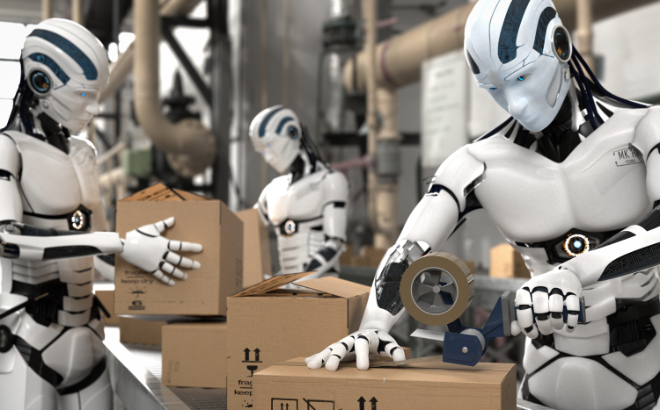
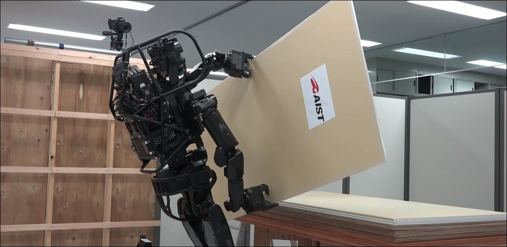
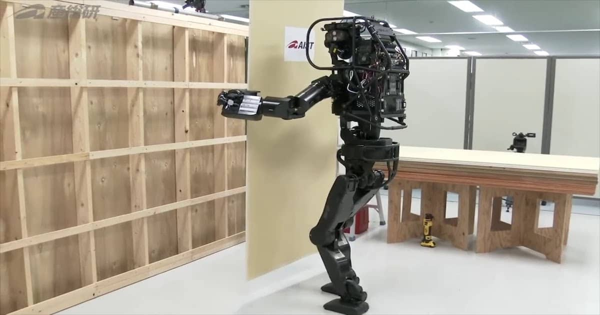

Quels métiers vont être créés grâce à la robotisation ?
Nous l’avons vu précédemment (Lien avec page précédente), les robots vont indéniablement nous remplacer dans les années à venir dans la majorité des métiers notamment les métiers à revenu moyen avec « l’Effet Barbell », mais aussi les métiers jugés dangereux.On peut penser que dans les 10 prochaines années, le chômage va exploser, qu’il va s’en découler une grève générale puis une crise économique dans les pays qui ont mis en place ce système de robotisation notamment les pays industrialisés comme les USA ou la France. Mais bien au contraire, les robots vont créer un nouveau marché, une nouvelle économie, de nouvelles sources de revenus et de nouveaux emplois. Il faut voir cette robotisation comme une révolution industrielle, et tout comme les précédentes, celle-ci créera également des bouleversements dans la société avec la suppression d’emplois, voire d’entreprises entières. Cependant, elle créera aussi de nouvelles sources de profit, de nouveaux emplois et de nouvelles entreprises utilisant les nouvelles technologies.
Une peur ....qu’il faut relativiser
Au début du 21eme siècle, le monde du travail tremblait face à l’arrivée massive des nombreuses nouvelles technologies, notamment dû au développement de l’informatique : robots automatisés ou encore Intelligence Artificielle (IA). Une peur très présente sur le continent américain, avec une génération qui souhaite retrouver le « Rêve américain » : un emploi stable, un revenu régulier et une retraite dorée qui était accessible par n’importe qui. Avec l’arrivée de l’IA, tout le monde craint d’être remplacé par un robot.
Ces robots, en constante évolution, savent désormais sauter, faire des flips sans tomber....
.....mais aussi franchir des obstacles !
En effet, à cause de « L’Effet Barbell » on observe que les emplois à haut revenu et à bas revenu sont des emplois qui prennent de l’ampleur, au détriment des emplois à revenu moyen qui eux sont progressivement automatisés et/ou informatisés. Parallèlement, les différences de salaire entre les plus riches et les plus pauvres se sont creusés. Mais les robots ont également été créé pour soulager les Hommes dans certaines tâches jugées dangereuses ou trop laborieuses que les Hommes ne veulent plus effectuer. Il faut donc voir les côtés positifs de ce bouleversement industriel, qui sont plus importants qu’on ne le croit.

Ici, on peut observer que la part des salaires en 1970 est sensiblement égal entre les poste a haut, médians et faible revenus [1]

Et ici, on peut observer que la part des salaires médians est passé de 38% à 23% réduisant la classe moyenne, de plus on remarque un écart des salaires entre les hauts revenus et les faibles revues. [1]
Dans un premier temps, nous allons donner quelques domaines dans lesquelles les robots vont assister l’Homme dans son travail. Puis nous étudierons quelques exemples où la robotisation peut sauver des vies ou des entreprises qui ne trouvent pas de main d’œuvre.
1. L’assistance à l’Homme
La robotique en industrie
Le développement des robots industriels permet un gain de temps mais également de soulager les ouvriers de tâches jugées pénibles.La robotisation incontournable et au coeur de l'industrie automobile mondiale !
La logistique, une prochaine étape dans la robotisation.
Par exemple, en entrepôt, les machines aident les ouvriers à déplacer facilement des palettes de plusieurs tonnes, ou encore en usine avec des machines capables de remplir, très rapidement et en toute sécurité, des contenants en produits chimiques par exemple, de les étiqueter, bouchonner, palettiser et filmer en un temps records sans manipulation pénible pour l’Homme (port de charge réduit, gestes répétitifs moins nombreux etc…). L’émergence de ces nouvelles machines imprégnées de technologie créée de nouveaux emplois directement liés comme Techniciens de maintenance, Automaticiens, ingénieurs informatique, nécessaires à l’entretien et au développement de ces nouvelles machines.
La robotique en médecine
Une opération chirurgicale peut-être dangereuse pour le patient, il faut être le plus précis possible, ne pas être brusque. Mais aujourd’hui en médecine, il est possible de faire des opérations chirurgicales en diminuant ces risques grâce à un robot piloté par le chirurgien. Nommé le « Da Vinci », ce robot permet de faire des opérations très précises en opérant directement à l’intérieur du patient sans incision invasive. Cependant, contrairement à ce que l’on peut penser, l’Homme reste toujours au cœur de la médecine, il y aura toujours besoin de chirurgiens expérimentés, d’infirmiers pour les assister.
Si des opérations délicates et minutieuses sont possible aujourd’hui c’est grâce à l’évolution de la connaissance médicale mais aussi parce que du matériel de pointe sont disponible pour assister les médecins.
La robotique dans l’armée
La robotique nous aide aussi dans le domaine de la défense.
Dans l’armée de Terre, les véhicules automatisés se démocratisent avec l’arrivée de robot servant au déminage par exemple. Ceux-ci sont même désormais équiper d’une mitraillette ce qui évite l’accompagnement d’un militaire.
« Tout ce que les Etats-Unis développent dans le champ militaire, ils comptent l’armer », ironise Jody Williams prix Nobel de la paix. Traumatisé par la guerre en Irak, les Etats-Unis mettent tous les moyens en œuvre pour robotiser leurs engins militaires afin d’économiser des vies.
Dans la marine, l’armement et la navigation sont assurés par des logiciels automatisés autrefois pris en charge par l’équipage. Cela permet une meilleure précision en un temps réduit, ce qui permet aux marins de se concentrer plus facilement sur leurs missions et sur la stratégie à adopter en cas de combat.
2. Le remplacement de l’Homme pour les travaux dangereux ou pénibles
Dans l’armée
Dans le domaine de la défense, la robotique prend surtout de l’ampleur dans les années 90 avec les premiers drones. Les premiers drones de combat réellement efficaces arrivent dans les années 2000. La robotique remplace en partie les avions de chasse notamment dans les opérations en Afghanistan et au Yémen, et ces drones sont piloter à distances par des militaires. Le défaut de ces drones, bien qu’il reste très efficaces, c’est que les militaires qui les pilotent n’ont qu’une infime vision de ce qui se passe dans la zone où ils opèrent, il arrive donc très souvent que les militaires analysent mal la situation et qu’ils tuent des personnes qui n’étaient pas la cible la base.
Autre exemple : sur la zone démilitarisée de Corée, les sud-coréen ont mis en place des robots pour défende la frontière de potentiels intrus remplaçant ainsi les soldats. Ces robots sont développés par Samsung et sont pilotés par des militaires à distance.
Dans le BTP
Aujourd’hui, la filière du bâtiment (BTP) est le secteur professionnel le plus accidentogène en France avec 56 accidents sur 1000 salariés. Il concentre près de 14% de l’ensemble des accidents du travail.
La filière peine a recruté.

Dans ce domaine les nouvelles technologies ont toute leur importance. Les robots peuvent ainsi remplacer les hommes dans des tâches dangereuses.
Plusieurs entreprises comme Q-Bot ou Robot for Site (Coentreprise de VINCI) offrent des solutions robotiques industrielles adaptées aux particularité des métiers de la construction.
Les nouvelles technologies ne sont pas encore tout à fait au point, car certains acteurs du secteur du BTP craignent le changement, et d’autres n’ont pas besoin d’optimiser leur productivité et ne voit donc pas l’intérêt d’investir dans le domaine de la robotique.
De plus, d’un point de vue technique, les chantiers offrent des surfaces d’intervention souvent restreintes quand les robots ont besoin d’espace pour se mouvoir. Autre obstacle : les machines, même préalablement nourries de données cartographiques, peineraient encore à se repérer dans les bâtiments en construction dont les espaces, par essence, évoluent constamment.
Dans ce secteur, l’être humain reste essentiel.
Conclusion…Nos aïeuls l’ont déjà vécu
Chaque grand changement technologique bouleverse la société ou un domaine en question.
Prenons une fois de plus l’exemple de la guerre : Au Moyen-Age, on se battait généralement en armure avec des épées ou des arcs.
Avec l’arrivée de nouvelles technologies comme la découverte de la poudre à canons et donc la création des armes à feu, la manière de se battre a totalement été bouleversé et il a fallu s’adapter, se protéger et inventer d’autres technologie pour contrebalancer cette nouvelle technologie qu’était les armes à feu.
Mais le meilleur exemple reste les quatre révolutions industrielles que l’Homme a connues. Chaque révolution industrielle a apporté son lot de nouvelles technologies. La première révolution industrielle a vu naître « l’énergie à vapeur », c’est le début de la mécanisation avec la « Machine à vapeur » dont l’exemple le plus connu est le train à vapeur. C’est le 1er pas du remplacement de l’Homme par la machine.
L’exemple parfait est la ville de Youngstown, dans l’Ohio. Pendant plus d’un siècle, la ville était l’un des fleurons de la sidérurgie américaine. Il y avait du travail pour tout le monde, les emplois étaient stables et la vie était paisible pour les ouvriers, mais la mécanisation et l’automatisation sont venues remplacer les emplois de la classe moyenne de manière rapide et violente. Tous ces ouvriers se sont retrouver sans emplois ou à temps partiel. La région de Youngstown a perdu son identité. Elle illustre parfaitement ce qui se passe lorsque la main d’œuvre disparait dans une ville suite à la mécanisation et l’automatisation avec des retombées économiques mais aussi psychologiques.
Ici, on peut observer les fameuses usines de sidérurgie à Youngstown qui sont encore aujourd’hui complètement à l’abandons est désaffecté. [1]
Mais à 110 km de Youngstown, la ville de Pittsburgh raconte une tout autre histoire, la ville est aujourd’hui en plein boom. Pittsburgh est le parfait exemple de reconversion réussie, la ville a compris que les entreprises phares des années 70 ne seront pas les mêmes que dans les années 2000.
Il faut donc accepter que l’évolution et le changement soient la norme, et ça Pittsburgh l’avait bien compris, puisque qu’elle a survécu au changement des révolutions industrielles. Mieux encore, elle a su s’adapter aux nouvelles technologies en investissant dans la reconversion de la main d’œuvre, dans ses universités et sa recherche. Elle a donc créé de nouveaux emplois et a vu l’émergence de nouveaux métiers pour combler le vide laissé par ceux qui avaient disparus à l’arrivée des nouvelles technologies.
Encore aujourd’hui cette ville nous prouve que les robots et les IA sont bénéfiques dans le monde du travail puisque Pittsburgh est le leader mondial en matière de robotique et d’ingénierie de précision.
Bibliographie :
[1] La nouvelle révolution industrielle | ARTE, (7 juin 2022). Consulté
le: 3 novembre 2022. [Mp4]. Disponible sur: https://www.youtube.com/watch?v=g8TmGCSPrbQ
[2] D. Licata, « Métiers de demain : des robots... et des hommes »,
L’Etudiant, juin 2015.
https://www.letudiant.fr/metiers/les-metiers-qui-recrutent/metiers-de-demain-des-robots-et-des-hommes.html
(consulté le 3 novembre 2022).
[3] G. Vermot-Desroches, « Robots, IA... sont-ils des menaces pour
votre job et votre vie quotidienne ? », Capital.fr, 29 janvier 2019.
https://www.capital.fr/votre-carriere/robots-ia-sont-ils-des-menaces-pour-votre-job-et-votre-vie-quotidienne-1325387
(consulté le 3 novembre 2022).